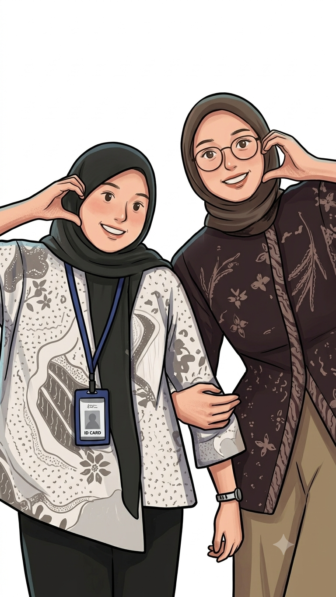
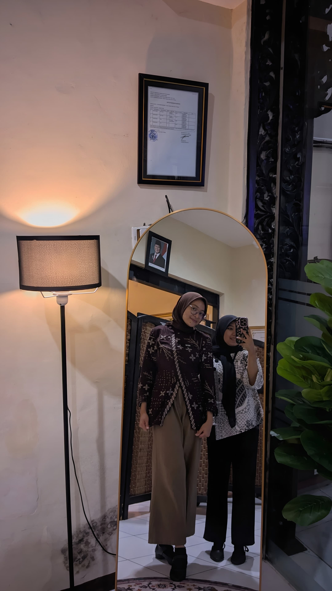
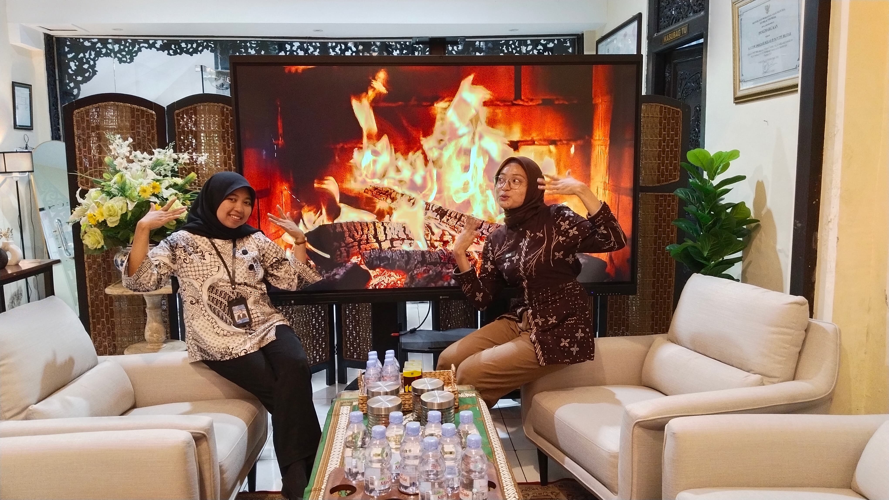
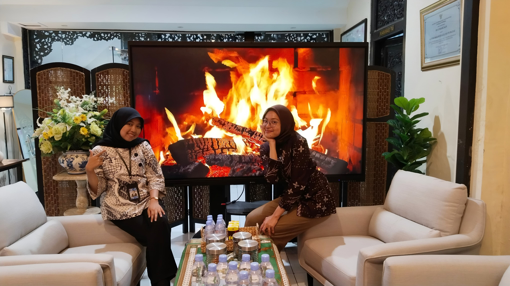
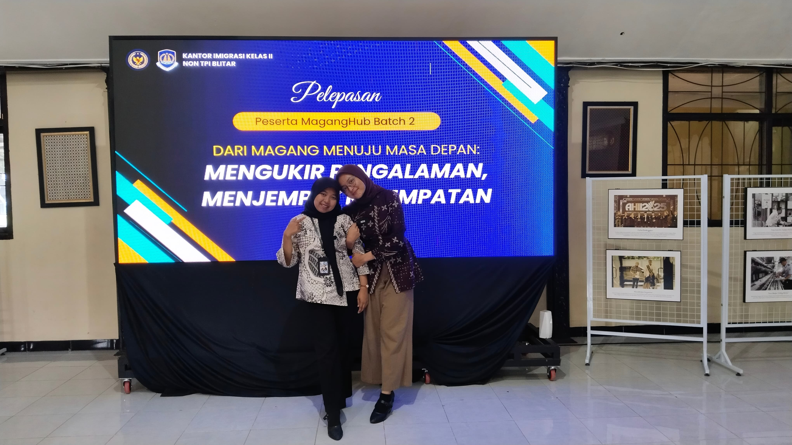

Ada sesuatu yang sudah aku siapkan khusus untukmu. Semoga setelah membukanya kamu bisa tersenyum. 🤍




Setiap foto ini mungkin hanya mengabadikan beberapa detik, tetapi di baliknya tersimpan begitu banyak cerita, tawa, dan kenangan yang tidak akan mudah dilupakan.
Terima kasih sudah menjadi bagian dari perjalanan magangku. Semoga pertemuan ini bukan menjadi akhir dari cerita, melainkan awal dari silaturahmi yang akan terus terjaga. 🤍